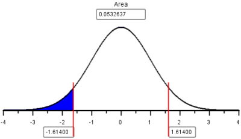

Lesson 17: Inference for One Proportion
Confidence Interval for One Proportion
Honesty at Medical School

Frederick Sierles and his colleagues distributed an anonymous survey to students at two American medical schools. The questionnaire was given during class without any prior announcement to students. The authors of the study personally supervised the distribution and collection of the surveys. 95% of the students completed the survey, and students from all four years of medical school training were represented. A total of 428 individuals participated in the survey. Among this group, 249 people indicated that they had cheated in some way during medical school. The results were published in a journal article in 1980.
We want to use the data from this study to generalize to a larger population. We are not usually interested in the particular individuals’ responses. The reason the study was conducted is to provide an estimate of the true population proportion, \(p\). \(\hat p\) is called a point estimate of \(p\). The sample proportion, \(\hat p\) is one point on the number line that estimates the value of the true proportion, \(p\).
A point estimate like \(\hat p\) is helpful, but it does not give us direct information on how close it is to the true parameter, \(p\). We use a confidence interval to find a range of plausible values for the parameter.
Confidence Intervals
To find a confidence interval for one population proportion, \(p\), we follow the same pattern as was done in the estimates for \(\mu\) in the lesson titled Inference for One Mean: Sigma Known (Confidence Interval). We start with the point estimate of \(p\) and we add and subtract a certain number of standard deviations from this value.
The point estimate for \(p\) is \(\hat p\). You might want to review the mean and standard deviation of the random variable \(\hat p\) in the lesson on Describing Categorical Data: Proportions; Sampling Distribution of a Sample Proportion. Traditionally, people have used these equations to create confidence intervals for the population proportion.
The formula for the confidence interval for one proportion is: \[ \left( \displaystyle {\hat p - z^* \sqrt{\frac{\hat p (1-\hat p)}{n}}, \hat p + z^* \sqrt{\frac{\hat p (1-\hat p)}{n}}} \right) \]
\[\text{where}\displaystyle{ \hat p = \frac{x}{n} }\].
You can use the normal probability applet to compute \(z^*\). Please see the lesson on Inference for One Mean: Sigma Known (Confidence Interval) if you need to review this procedure.
Be sure that you do not round any values until the last step. Please perform this entire computation without rounding.
Remember that for a 95% confidence interval, \(z^* = 1.96\). So, the lower bound for the 95% confidence interval for the true proportion \(p\) is: \[ \displaystyle { \hat p - z^* \sqrt{\frac{\hat p (1-\hat p)}{n}} = \frac{249}{428} - 1.96 \sqrt{\frac{\frac{249}{428} \left(1-\frac{249}{428}\right)}{428}} = 0.535 } \] The upper bound for the 95% confidence interval for the true proportion \(p\) is: \[ \displaystyle { \hat p + z^* \sqrt{\frac{\hat p (1-\hat p)}{n}} = \frac{249}{428} + 1.96 \sqrt{\frac{\frac{249}{428} \left(1-\frac{249}{428}\right)}{428}} = 0.629 } \]
The 95% confidence interval for the true proportion of medical students who cheat is: \((0.535, 0.629)\). To interpret this interval, we say that we are 95% confident that the true proportion of people who cheat in medical school is between 0.535 and 0.629. This represents the range of plausible values for the true proportion of students who cheat at these medical schools.
Requirement
Like other procedures, there are requirements that must be checked in order for this confidence interval to be valid. The confidence intervals are valid whenever \(n \hat p \ge 10\) and \(n(1-\hat p) \ge 10\). Notice that for the data on cheating in medical school, we have \(428 * 0.582 = 249\) and \(428 * (1-0.582) = 179\) which are both greater than 10, so this requirement is satisfied.
Using Excel to perform these calculations
Finding confidence intervals for one proportion using only a calculator is tedious. An Excel spreadsheet has been created to help you quickly and accurately perform these calculations. You will use this spreadsheet throughout this and other lessons.
To download this file, click here: Math 221 Statistics Toolbox
Click on the link at right for instructions on using this spreadsheet to calculate confidence intervals. Show/Hide Instructions

Another Study on Honesty at Medical School
DeWitt C. Baldwin, Jr. and others conducted a larger study to assess how widespread cheating is in medical schools. Elected class officers at 40 schools were invited to distribute a survey to their second-year classmates. Surveys were completed by students from 31 of the 40 schools. Among all students attending the 31 schools, 62% participated in the survey, yielding a total of \(n=2426\) surveys. Out of this group, \(x=114\) admitted to cheating in medical school. These results were published in Academic Medicine in 1996.
- Are the requirements for creating a confidence interval satisfied?
- What is the value of \(\hat p\) in this study?
- Use Excel to calculate the lower bound for the 95% confidence interval for the true proportion \(p\).
- Use Excel to help you find the 95% confidence interval for the true proportion of medical students who cheat based on the data from this larger study.
- Compare the confidence intervals obtained from the Sierles study to the confidence interval from Baldwin’s study. How do the results compare to each other?
- What are some possible factors that might explain the discrepancy in these two studies?
- How would you feel if you knew that your doctor cheated in medical school?
- Write a paragraph explaining why it is important to you to be honest in all your dealings with your fellow men–including your academic pursuits. Be sure to include a discussion of your future plans with regard to this issue.
Sample Size Calculations
If you can reduce the margin of error by increasing the sample size, then you can achieve a specific margin of error by choosing a large enough sample. So, if you are planning a future study, you can estimate the sample size you need to obtain a desired margin of error, \(m\).
The formula for the margin of error is: \[ m = z^* \sqrt{\frac{\hat{p} (1- \hat{p})}{n}} \] If we solve this equation for \(n\), we get: \[ n = \left( \frac{z^*}{m} \right)^2 \hat{p} (1-\hat{p}) \] Note that this equation requires us to know the value of \(\hat{p}\). Unless we do a study, we do not know the value of \(\hat{p}\). Sometimes we have a prior estimate of the true proportion of successes, denoted \(p^*\).
If we have a prior estimate for \(\hat{p}\), (namely \(p^*\),) we can plug this value into the equation above to compute the sample size required to obtain our desired margin of error: \[ n = \left( \frac{z^*}{m} \right)^2 p^* (1-p^*) \] where \(z^*\) is determined by your confidence level, \(m\) is your desired margin of error, and \(p^*\) is an estimate of the true proportion of successes. If no prior estimate for \(p\) is available, we can use the following formula to compute our sample size: \[ n = \left( \frac{z^*}{2m} \right)^2 \] The latter formula (where no prior estimate for \(p\) is available) will result in excessively large sample sizes if \(p\) is small (say, less than 0.3) or large (say, greater than 0.7.) Otherwise, the results for the two equations will be fairly similar.
No matter what value you obtain for the sample size, if it is not a whole number round it up to the nearest whole number.
Example
If you want to find the sample size required to get a margin of error of \(m=0.03\) with 95% confidence, and previous studies have shown that the true proportion is approximately equal to \(p^*=0.82\), then the sample size required would be: \[ \displaystyle { n = \left( \frac{z^*}{m} \right)^2 p^* (1-p^*) = \left( \frac{1.96}{0.03} \right)^2 (0.82) (1-0.82) = 630.02 } \] We need to round this answer up to the next larger whole number. So, you would need to collect \(n=631\) observations to obtain the desired margin of error.
Hypothesis Test for One Proportion

Can You Taste PTC?

The ability to taste the chemical Phenylthiocarbamide (PTC) is hereditary. Some people can taste it, while others cannot. The ability to taste PTC is typically assessed using paper test strips. When a PTC test strip is placed on the tongue, it will either taste like regular paper or else have a bitter taste.

It is believed that 70% of all people are able to taste PTC. Data were collected by Elise Johnson to investigate this claim. Volunteers were provided with PTC test strips and asked if they could taste anything besides paper.

Out of the 118 people who participated in the research, 89 indicated that they can taste PTC. The proportion of people in the sample who could taste PTC is \[ \hat p = \frac{89}{118} = 0.754 \]
In other words, 75.4% of the people surveyed could taste the chemical.


The empirical research suggested that the proportion of people who can taste PTC is \(\frac{89}{118} = 0.754\), or 75.4%. Is this significantly different from the assumed value of 0.70 (i.e., 70%)? We can test this question using a hypothesis test.
If the following conditions are satisfied:
- \(np \ge 10\)
- \(n(1-p) \ge 10\)
then the sample size is large enough that the Central Limit Theorem suggests the sample proportion, \(\hat p\), is approximately normal. Also, the true mean of \(\hat p\) is \(p\), and the standard deviation is \(\sqrt{\frac{p \cdot (1-p)}{n}}\).
Notice that the requirements are satisfied for the PTC data: \[ \begin{array}{ll} np = 118 \cdot 0.70 = 82.6 \ge 10 & \surd \\ n(1-p) = 118 \cdot (1-0.70) = 35.4 \ge 10 & \surd \end{array} \]
We can use a procedure that mimics the test for a single mean with \(\sigma\) known from the lesson titled Inference for One Mean: Sigma Known (Hypothesis Test) to conduct a test for a single proportion.
It is assumed that the true proportion of people who can taste PTC is 0.70. This is the null hypothesis. The alternative hypothesis is that the true proportion is different from 0.70. \[ \begin{align} H_0: & p = 0.70 \\ H_a: & p \ne 0.70 \end{align} \] We will use the \(\alpha=0.05\) level of significance in this test.
If the requirements are satisfied, then \(\hat p\) is approximately normal with mean \(p\) and standard deviation \(\sqrt{\frac{p \cdot (1-p)}{n}}\). The test can be based on the standard normal (\(z\)) distribution. The test statistic is: \[ z = \frac{\textrm{value}-\textrm{mean}}{\textrm{standard deviation}} = \frac{\hat p - p}{\sqrt{\frac{p(1-p)}{n}}} = \frac{\frac{89}{118} - 0.70}{\sqrt{\frac{0.70(1-0.70)}{118}}} = 1.286 \]
Remember, we assume that the null hypothesis is true, so we use the value given in the null hypothesis for \(p\). Using the NormalApplet, you can find the \(P\)-value. This is a two-tailed test, since the alternative hypothesis includes both values above 0.70 and below 0.70. In the applet, make sure both tails are shaded, then enter the \(z\)-score of 1.286.

The combined area in the two tails is 0.1984, which is greater than \(\alpha = 0.05\). We fail to reject the null hypothesis.

We conclude that there is insufficient evidence to suggest that the true proportion of the population that can taste PTC is different from 0.70. There is no reason to revise existing perspectives on the prevalence of the ability to taste PTC.
- Compare and contrast the test for one mean with \(\sigma\) known and the test for one proportion. Give at least two similarities and two differences.
Using Excel to perform these calculations
The Math 221 Statistics Toolbox in Excel can also be used to perform hypothesis tests for one proportion.
To download this file, click here: Math 221 Statistics Toolbox
Click on the link at right for instructions on using this spreadsheet to perform hypothesis testing. Show/Hide Instructions
Water Quality

Macroinvertebrates are small insects (without an internal skeleton) that live on the bottom of a stream. These insects are ideal for monitoring changes in water quality, because they (1) live nearly all their life in the water, (2) are easy to collect and identify, (3) often live for several years, (4) have a limited ability to migrate, and (5) they are influenced by environmental conditions.
In any population of macroinvertebrates, there will be indicators of good health and indicators of poor health. Data are collected by capturing macroinvertebrates and recording whether they indicate good health or poor health for the river. In particular sections of a small river near Bozeman, Montana, about 60% of the indicators observed have historically been associated with good health.
Researchers suspect that the water quality in the area has decreased, suggesting that less than 60% of the indicators will show good health. A random sample of macroinvertebrates were captured from the river.
Among the \(n=40\) observed indicators of health, \(x=19\) suggested good health. Use this information to answer the following question.
- What is the proportion of the observed indicators that suggested good health? Express your answer as a decimal and a percentage.

The following questions will guide you through the process of conducting a hypothesis test to determine if the water quality has decreased. Use \(\alpha=0.05\) for this test.
- The two requirements required to conduct a hypothesis test for one proportion are
\[ \begin{array}{l} np \ge 10 \\ n(1-p) \ge 10 \end{array} \]
- Are these requirements satisfied?
- The null hypothesis is \(H_0: p = 0.6\) What is the alternative hypothesis?
- Fill in the blanks to compute the \(z\)-score.
\[ \displaystyle{ z = \frac{\hat p - p}{\sqrt{\frac{p(1-p)}{n}}} = \frac{()-0.60}{\sqrt{\frac{0.60(1-0.60)}{40}}} = -1.614} \]
- The \(P\)-value will be the area under the normal curve to the left of \(z\). Why will you only shade the left tail?
- Using the Normal Probability Applet, it is determined that the area to the left of \(z=-1.614\) is 0.053.

The shaded area in this figure (0.053) represents the \(P\)-value for this test. What is the decision for this test, do we reject the null hypothesis or fail to reject the null hypothesis? Give an English sentence summarizing the conclusion.
Show/Hide Solution
Even though the proportion of indicators that suggested good health was less that 60%, it was not statistically significantly less than 60%. Unless future research indicates to the contrary, we cannot say that the water quality in this river has decreased.
Summary
The estimator of \(p\) is \(\hat p\). \(\displaystyle{ \hat p = \frac {x}{n}}\) and is used for both confidence intervals and hypothesis testing.
You will use the Excel spreadsheet Math 221 Statistics Toolbox to perform hypothesis testing and calculate confidence intervals for problems involving one proportion.
The requirements for a confidence interval are \(n \hat p \ge 10\) and \(n(1-\hat p) \ge 10\). The requirements for hypothesis tests involving one proportion are \(np\ge10\) and \(n(1-p)\ge10\).
- We can determine the sample size we need to obtain a desired margin of error using the formula \(\displaystyle{ n=\left(\frac{z^*}{m}\right)^2 p^*(1-p^*)}\) where \(p^*\) is a prior estimate of \(p\). If no prior estimate is available, the formula \(\displaystyle{ \left(\frac{z^*}{2m}\right)^2}\) is used.
Copyright © 2020 Brigham Young University-Idaho. All rights reserved.